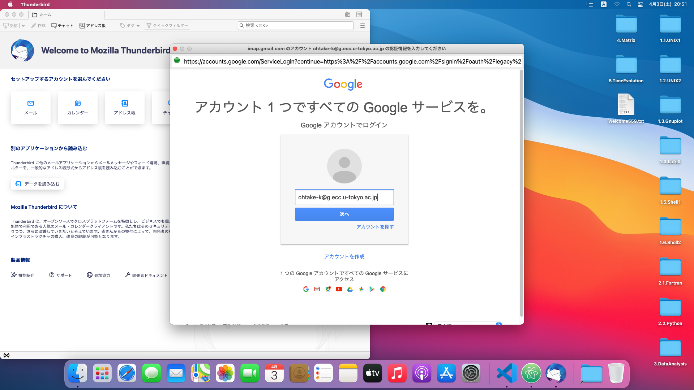
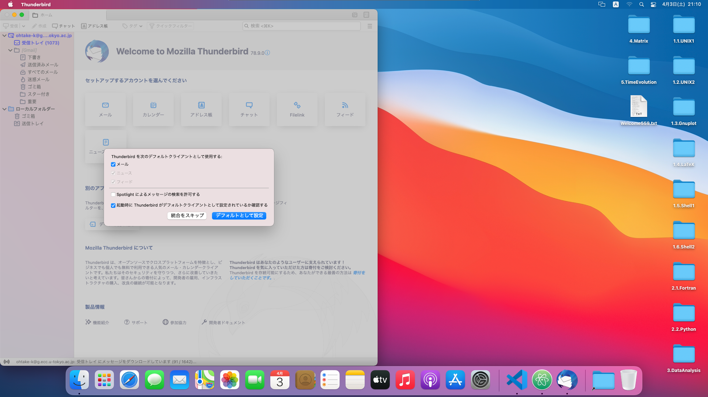

ECCSクラウドメール・Thunderbird・Slack
ECCSクラウドメール
メールアカウント
さて，皆さんは教育用計算機システム（ECCS）のメールアドレスを使用することができます．地物学科では地惑事務室からの重要な連絡事項や講義の課題レポートの提出などはこのメールアドレスを通じてやり取りすることが多くなりますので， ECCSアドレスの設定がしっかり機能しているか確認しておきましょう．
まず，SafariかFirefoxで
へアクセスしてください．
ECCSクラウドメールにログインできるか確認しましょう．下図の赤枠内のリンクからアクセスしてください．

ログインできない人や，そもそもECCSクラウドメールを設定していない人は，このページに従って設定しておきましょう．
UTokyoアカウント名は10桁の番号です，アカウント名やパスワードがわからない場合にはTAにご相談ください．
ログインできましたか？今後の演習はもちろん，事務からの重要なメールも期のhh的にはこのアドレスに届くので，こまめにメールをチェックしましょう．なおECCSクラウドメールはGmailアプリなどからもログイン可能です．ECCSのHPに詳しい説明がありますので，各自のスマートフォンやノートパソコンからこまめにメール確認できるようにしておきましょう．
署名の作成
せっかくログインできることを確認できたので，より実用的な設定を行っておきましょう．例えば，毎回署名（送り主のプロフィールを記載したもの）を書くのは大変です．作成するメールに自動的に署名が挿入されるよう，設定しましょう．
ログイン後の画面の右上の方に「歯車」のアイコンがあるのでこれをクリックし「設定」へ進みましょう．画面遷移すると様々な設定項目が出てきますが，「署名」はページの後方にあります．下の図のように所属・名前など基本的な情報を載せるようにしておくと良いでしょう．海外の方と連絡を取ることが多い方は英語 Ver も用意しておくのが吉です．

Thunderbird
Thunderbird は mozilla プロジェクトによって提供されているフリーのメーリングソフトです． 拡張性に富み，直感的な操作ができるほか，いくつかのOS上（Windows，Mac，Linux）で同じように使えるのが特徴です．
メールアカウント設定
eduにインストールされたThunderbirdにECCSクラウドメールを設定する方法を説明します．じぶんのWindows PCやMacでも同様にして設定できるはずです．
LaunchpadからThunderbirdを起動します．次のようなウインドウが開きます．

ECCSクラウドメールのアドレスを入力し，パスワードは空欄のまま，「続ける」をクリックします．
すると「アカウント設定がMozilla ISPデータベースから見つかりました」と表示されます．もし表示されなければ，メールアドレスが間違っています．プロトコルが「IMAP（リモートフォルダー）」になっていることを確認し，「完了」をクリックします．

するとGoogleのログイン画面が表示されるので，「次へ」をクリックします．

ECCSクラウドメールのパスワードを入力し，本人確認が表示されたら指示に従います．
「許可をクリックします」

「デフォルトとして設定」をクリックします．

メールが表示されたら，設定完了です．

署名の作成
「ツール」→「アカウント設定」とクリックします．

「署名編集」の欄に署名を作成します．
Slack
Slackとは，ビジネス用チャットアプリです．計算機演習では，授業に関する連絡手段や質問の場としてSlackを使います． こまめにチェックできるように，自分のパソコンにSlackアプリをインストールしましょう．また自宅にいて自分で調べてもわからないことは，Slackで遠慮なく教員やTAに質問してください！